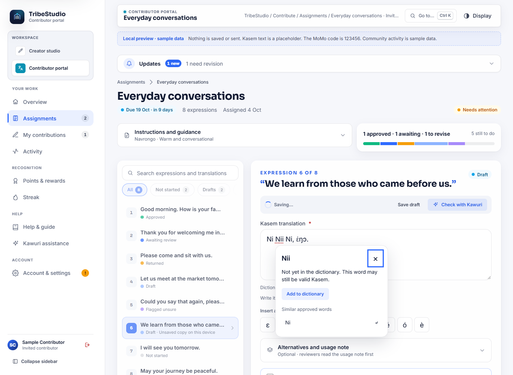
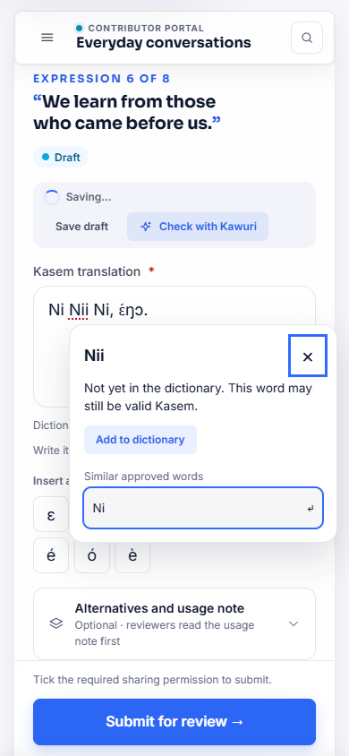

Kasem contributors can check unfamiliar spellings against the approved dictionary while keeping their expression or longer text intact.
A red dotted underline means “Not yet in the dictionary”. It does not mean your Kasem is wrong. The dictionary is growing, and regional spellings, names and words may not have been recorded yet.
Assistance covers assigned translations and alternatives, open expressions, original Kasem knowledge records and transcripts, and Kasem writing, translation and narration fields in the responsive web portals. Dedicated single-word contribution forms keep their existing workflow.

Click an underlined word on a computer, or tap it on your phone. The pop-up shows the word, explains the underline, and offers similar spellings from approved dictionary entries. Choosing one replaces only the occurrence you selected. Punctuation and surrounding text stay in place.
Keyboard users can press Alt + Down Arrow in a Kasem field, move between actions with the arrow keys, and press Escape to return to editing. The “Dictionary: words to check” button offers another way to open assistance.

Choose Add to dictionary. The selected spelling is filled in. Add its English meaning, word class, dialect and source, confirm permission to share it for review, and choose whether it may be published if approved.
Your original contribution stays open. The word enters the existing review workflow; existing approval and points rules apply. Approved or pending spellings show a status instead of encouraging repeated submissions.
Checks wait for a pause in typing and reuse recent results. Capitalization and equivalent Unicode spellings match without changing what you entered. Kasem letters and tone marks remain significant. Failed lookups do not label unchecked words missing.
The fields request that browser spellcheck, autocorrect and automatic capitalization be switched off. Custom dictionary assistance stays available. Third-party keyboards and extensions may still apply their own spelling tools.
This release covers the responsive web portals. Offline dictionary checks are unavailable. Browsers unable to insert suggestions while keeping editing history show instructions for replacing the selected occurrence manually. Native mobile app distribution and Blogger publication are separate steps.